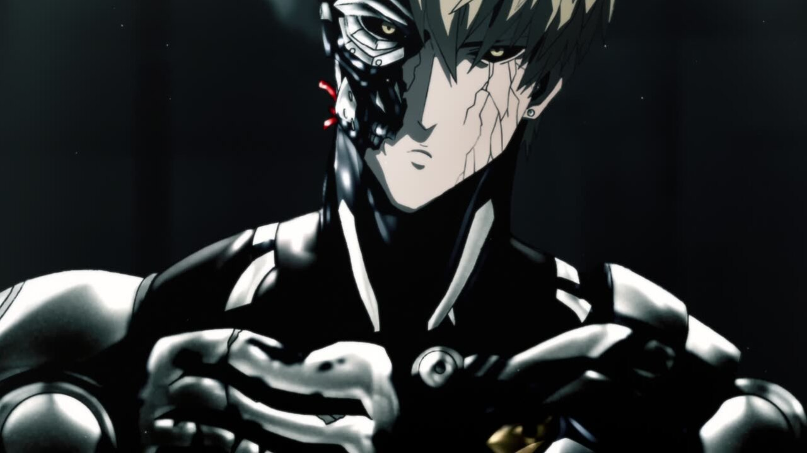
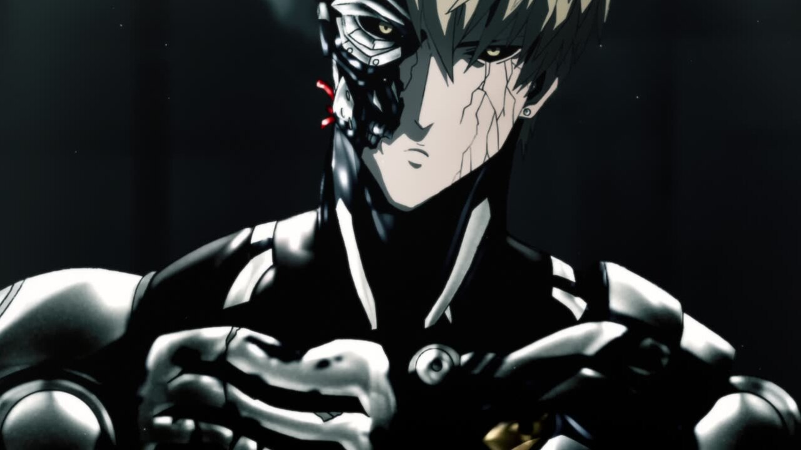
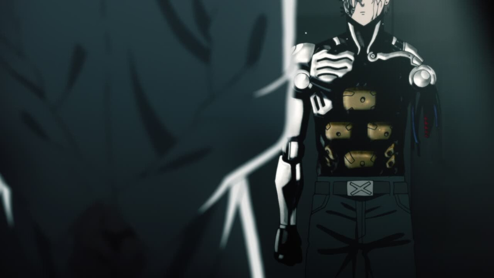
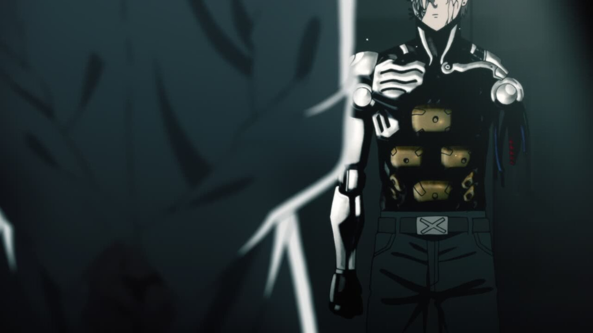

Season 2: Episode 1 - Return of the Hero
Hello everyone, and welcome to season 2! This season was among one of the most controversial parts of the OPM franchise, but the Blu-Ray release brings some great changes! Throughout this guide, I'll be looking at every single change from the TV version to the Blue Ray, down every single pixel.
Some things to note, as this is the first post:
- The blu-ray is always on the right, and TV on the left. This is true of both the image sliders and the videos.
- The timing of every frame is exactly aligned. This means that tiny position or lip flap changes are not just me looking at the wrong frame, but an actual change on the blu-ray.
- I am human! This process involved me looking at over 30,000 compared frames and figuring out changes between them. I can make mistakes, and if you find any, please let me know and I will definitely correct them.
That all being said, let's take a look!
- Our first change of the season was a massive talking point in the OPM community: Genos's Shading! Though it's not a total reshade, the highlights and general metallic feel is brought out a bit better.


-
Saitama also gets some love with a redraw +
reshade,
removing the odd bottom shadow and reworking his facial proportions in a much needed improvement:


- Saitama also gets redrawn here, with his head rounded out and his forehead a bit more reasonably sized. Also, the HiZiki text on the box is darkened:


- Saitama gets another touchup in this shot, as well as a name change in the opening credits on the bottom right. I don't know Japanese, so if anyone can read what the change was, let me know what the difference is. Also, if you noticed, the HiZiki text is back to grey for whatever reason.


- The pespective and positioning on a lot of the elements of this shot are different, and the beige building was recolored to brown:


- King's legs get a redraw/reshade, and a little timing change in his walk cycle.


- This change is the first example of arguably the best feature of the BD: NO GHOSTING! This shot only had 2F ghosting, meaning each frame was on screen for two frames. This is the best case scenario for ghosting, but the sharpness and brightness of the unghosting is still extremely refreshing to see.
- The background characters have new fist pumping animations.


- The shadows on the girls' are now smoothed, rather than sharp. I'm not sure of the logic behind this change to be honest.


- The background characters get some position changes, pose changes, and some new mouth flaps. Thankfully though, Tounge Stretcher is still thick as hell.


- The glasses in this shot get new shading, and the girl on the far left finally gets some bangs to cover up her lack of eyes.


- The other background characters no longer shorter than the guy in the green jacket.


- This shot of Genos and Saitama now contains a parallax zoom, rather than just being a still shot.
- Genos is moved like 3 pixels:


- The light in the bathroom is not ghosted, so it flickers properly.
- King's nostrils get shaded properly:

- King's Nose gets a shadow correction.


- The smoke here is totally different, with it now covering Genos at the beginning and being on top of the flying piece of metal.
- However, this shot's "smoke" is lifted as the 7 FRAME GHOSTING of the TV version actually contains a really nice cut of un-ghosted animation.
- The perspective of this shot is changed, as well as the position of quite a few things.


- The Demon Cyborg gets more un-ghosted love as the 4-frame ghosting of these two shots are removed.
- The background of this shot is now consistent with all the other scenes:


- This unghosted (3F) attack sequence looks like something straight out of Season 1.
- In less exciting news, king's animation gets retimed here:
- King gets moved a bit here, and gets proper mouth shadows.


- And a few minor lip flap changes.


- Saitama gets yet another facial redraw here,


- some flap changes,
- and a slight mouth position change.


- The speedlines around King were unghosted and a vignette was added to the shot.
- The 4F Ghosting on this shot gets removed and Genos is no longer a blurry mess:
- King and Saitama get wider shoulders,and some new lining:


- Saitama has a few lip flap changes in this shot.


- King is now consistenly in this shot, and Saitama is the one being scaled up.
- Saitama is moved further away from King, who gets a skinner redraw here and a wire for his game controller. Also, Saitama's shoes are removed from outside.


- King is now facing left in this shot.


- The rubble is removed from this shot.


- Aside from the water animation being retimed and having some new frames, there is also some odd camera motion blur that was removed from the final cut.
- The this splash screen gets a retouch, featuring a Genos redraw:
- Satiama stays in his non-serious form in this shot, rather than the half-serious version of the TV release.
- The lighting and zoom of this shot are changed:
- Same applies in the picture and picture:
- The background gets more rubble and a slightly different perspective:
- King gets body animation here.
- King's tears are differently shaped with different highlights:
- This shot is composed differently:
- King and Saitama are different sizes and in different positions:
- Following another large fanbase pushback on this scene, Saitama gets more frames here.
- King's hand reach animation is retimed.
- Both King and the set are repositioned here:
- Genos gets numerous lip flap changes throughout this scene.
 

- Genus's ear gets the shadow it deserved.
- Genus's face also gets a new fancy shadow:
- Genos continues to have flap changes throughout these shots.
- Some questionable Genos art gets a much-needed correction.
- Genus gets moved a bit, and the lighting on Genos is darker.
 

- This shot is zoomed out more, and the clouds are repositioned and slowed down slightly:
- Sitch gets reshaded here:
- The camera movements in these two shots are different:
- The guy in the foreground gets a skinnier redraw.
- Blue Fire gets redrawn as well:
- The camera pan here matches up with the movement, rather than a steady linear pan.
- Speed-o-sound Sonic gets a perspective fix in his season debut:
- Fubuki starts off strong with some lip flap changes:
- The Class B Rank 1 Hellish Blizzard text appears a few seconds earlier.
- Fubuki's lackeys get more detail, and the fence gets the Genos treatment with a metallic reshade.
- Fubuki also gets a facial redraw here:
- With a change in shot order, the post credit scene starts off with a new shot of papers on the ground, followed by old shot of the TV screen.
- The Genos splash screen at the end is zoomed more, and his eyes now have a more suble glow with added lens streaks and bloom.
THE ED FOR EP1 IS THE OPENING. WHICH OBVIOUSLY HAS CHANGES, BUT I WILL COVER THE FULL RESOLUTION OP IN EPISODE 2.
That's Episode 1! Though many of the changes were shading or composition related, there were some awesome cuts of un-ghosted animation in there. I haven't had the chance to look frame by frame at Episode 2 yet (I will, don't worry,) but watching it as a whole was awesome, and I anticipate even more great changes when I take a closer look.
I hope you enjoyed the comparison!